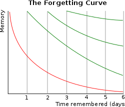

* Learn how to improve your learning
efficiency before you start
studying.
Memory Mechanism
Memory can be broadly divided into short-term and long-term
memory.
# Short-term memory:
Memory that is retained for short periods of
time. It stores temporary information such as a phone number or the
contents of a memo. # Long-term memory:
Memory that is retained over a long period of
time. It stores information that you want to remember for the rest
of your life, such as knowledge, experiences, and memories.
Memories are formed through the involvement of various regions in
the brain. Of particular importance are the hippocampus and cerebral
cortex.
Hippocampus:
Involved in the formation of new memories. By storing
experiences in the hippocampus, we move from short-term memory to
long-term memory. Cerebral cortex:
Retains memories of the past over the long term.
Information stored in the hippocampus is distributed and stored in
various areas of the cortex.
The following methods can be used to promote memory
retention.
Repetition:
Repeatedly reviewing the information you want to
remember strengthens the neural pathways in your brain, making it
easier to retain.

(Hermann Ebbinghaus's Forgetting curve.) Associate:
Associating the information you want to remember with
other information creates a memory network that makes it easier to
recall. Imagery:
Imagining the information you want to remember helps you
remember it more clearly. Sleep:
During sleep, the brain is able to consolidate and
organize
memories. Adequate sleep promotes memory consolidation. Exercise:
Exercise stimulates blood flow to the brain and improves
hippocampal function. Moderate exercise is effective in improving
memory.
By consciously practicing these methods, memory can be retained more
effectively.
Example of my memory method
I create a short story by linking new words I want to remember with words I already have in memory through sound.
When I recall the words, I first remember the story I created, and then I recall the connection between the story and the words.